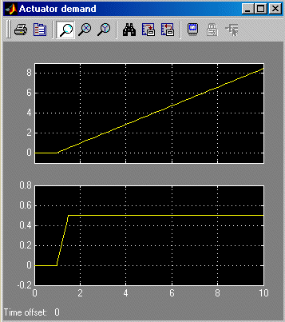

Self-conditioned Controller
This demonstration shows the implementation of a state-space controller [A,B,C,D] in a self-conditioned form versus a typical state-space controller [A,B,C,D].
For the self-conditioned state-space controller, if measured control value is equal to the demanded control value (u_meas = u_dem), then the controller implementation is the typical state-space controller [A,B,C,D]. However if measured control value (u_meas) is limited, e.g., rate limiting, then the poles of the controller become those defined in the mask dialog box.
The results of a typical state-space controller [A,B,C,D] and a self-conditioned state-space controller with a limited measured control value are shown below.
